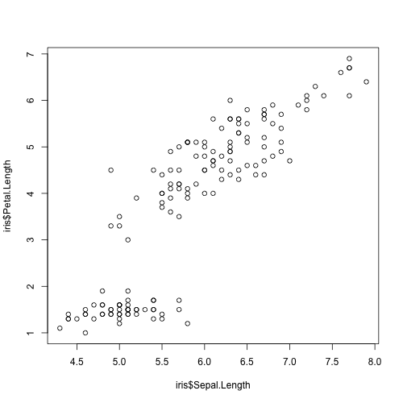
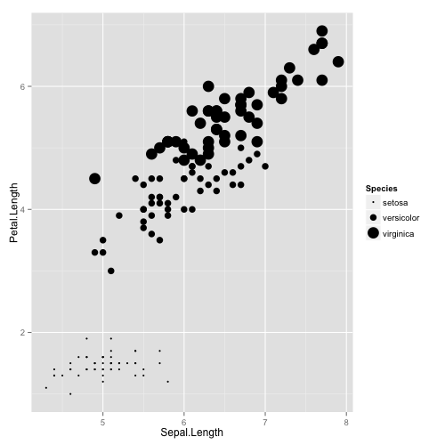
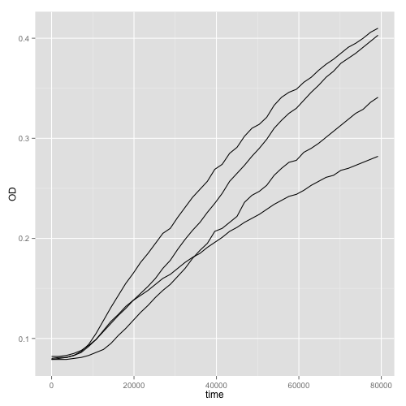
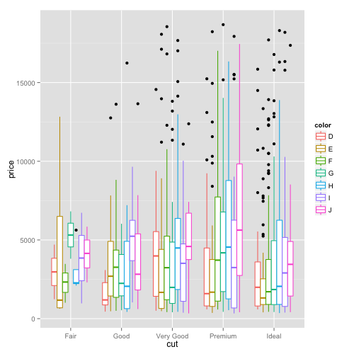
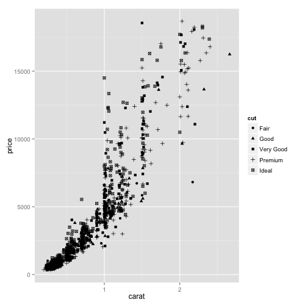
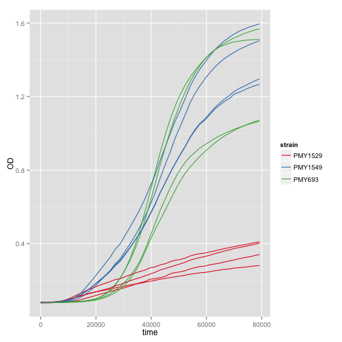
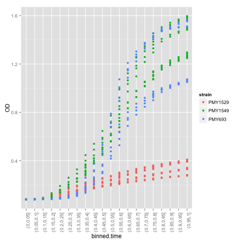
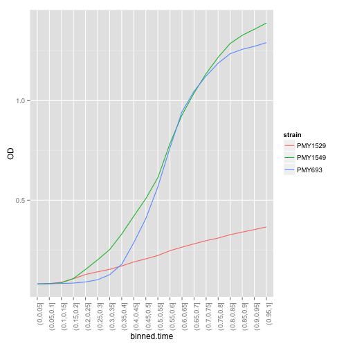
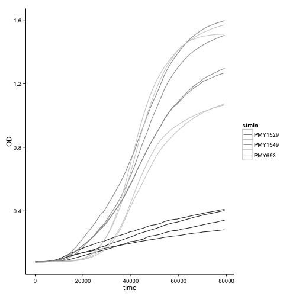

ggplot2
Table of Contents
1 Why use ggplot2?
- It's not just a plotting package, it's a conceptual lifestyle!
- Rather than giving you a prepackaged set of plots, ggplots gives you the ability to 'speak' data visualization.
2 ggplot resources
- A good reference
- http://docs.ggplot2.org/current/
- A poorly written book
- ggplot2: Elegant Graphics for Data Analysis by Hadley Wickham ebook at Duke libraries
- A wicked set of plots about Baltimore
-
http://www.r-bloggers.com/visualizing-baltimore-with-r-and-ggplot2-crime-data/
3 Using ggplot2 to make a scatter plot
The goal of this section is to motivate why you might want to use ggplot rather than the R base graphics. To begin with, we'll load the package ggplot2 that contains the functions we'll need for the first section and two data.frames of data: we've already seen the iris dataset. The second dataset is the color, cut, clarity, caret and price of about 60,000 diamonds. Since the diamonds data is so big, we'll take a subsample of 1,000 points:
library(ggplot2); data(iris); data(diamonds) diamonds.sampled <- diamonds[ sample(1:nrow(diamonds), 1000),]
As a first example, let's think about a scatter plot, to begin with, we'll use the R base package. When we tell R to make a scatterplot, we have to tell it what the 'X' values will be and what the 'Y' values will be:
plot( x = iris$Sepal.Length, y = iris$Petal.Length)

You can imagine an algorithm that tells R to go to each line in the table of values, find the column for the Sepal length, then the column for the petal length, and finally, to draw a dot where those two things intersect. Another way of saying this is that the horizonal coordinates are mapped onto a particular column of the data (the sepal length) and the vertical coordinates are mapped onto another column (the petal length).
We could embellish our plot a bit by adding some colors to correspond to the species. However, this actually involves a fair bit of somewhat obscure code:
#Set up a vector of color keywords for R to index COLORS = c("red", "blue", "green") #Since factors are encoded as numbers and a list of levels, we can index #the color vector using the numeric version of the species plot( x = iris$Sepal.Length, y = iris$Petal.Length, col = COLORS[ as.numeric( iris$Species ) ] ) #Finally, we can add a legend legend( "topleft", pch = 1, col = COLORS, legend = levels( iris$Species ) )

Now we have three mappings: one from sepal length to X, one from petal length to Y, and one from species to color. In the lingo of ggplots, these mappings are called 'aesthetic mappings' and the way that these mappings are drawn on the plot is called the 'geometry,' or the 'geom.' Using ggplot, we can make the same plot, but with a little different syntax:
ggplot(iris, aes(x = Sepal.Length,
y = Petal.Length,
col = Species)
)+
geom_point()

The function 'ggplot' takes two arguments: the first is a data.frame that your plot will be made out of (iris in this case). The second is a function called 'aes' that sets up the aesthetic mappings. In this case, we told ggplot that we wanted the sepal length on the x axis, the petal length on the y axis, and the colors to be encoded by the species. However, we could choose any number of other aesthetic mappings. We could use shape:
ggplot(iris, aes(x = Sepal.Length,
y = Petal.Length,
shape = Species)
)+
geom_point()

Or size:
ggplot(iris, aes(x = Sepal.Length,
y = Petal.Length,
size = Species)
)+
geom_point()

ggplot is also smart enough to render continuous variables as colors or sizes:
ggplot(iris, aes(x = Sepal.Length,
y = Petal.Length,
size = Petal.Width)
)+
geom_point()

ggplot(iris, aes(x = Sepal.Length,
y = Petal.Length,
col = Petal.Width)
)+
geom_point()

We could even make a difficult to interpret plot showing all five data columns:
ggplot(iris, aes(x = Sepal.Length,
y = Petal.Length,
col = Petal.Width,
size = Sepal.Width,
shape = Species)
)+
geom_point()

There's quite a lot of advantages to this approach rather than trying to replicate this plot with base graphics:
- the legend is automatically drawn for you.
- the code is very easy to change. Rather than having to figure out how to manually map a point size onto a variable using some difficult R code, it's just as simple as saying to set the 'size' equal to a 'variable'.
- it's easy to swap around variables from one aesthetic mapping to another.
And this is just the beginning!
4 ggplot
Probably the biggest obstacle to learning ggplot-style graphics is that it requires learning a different syntax for plotting. The following sections break down a ggplot into it's component parts.
We've already seen the function 'ggplot' itself. The first argument is always a data frame. The data frame is the one that ggplot will use to look for all the mappings that you define in the subsequent pieces of the plot. The nice thing about this is that there is no need to use the dollar sign notation. (You can get a similar behavior in base plots by specifying the 'data' argument)
The second argument is always a function called 'aes.' aes takes named arguments. Each argument name is the 'aesthetic' that you want mapped to a particular column in the data. The way you specify the mapping is by writing the aesthetic (ie size) '=' the column name. (Note that the column names aren't in quotes) For example, if we want the diamond's caret to be on the x axis and the diamond's price to be on the y axis, we would write:
ggplot(diamonds.sampled, aes(x=carat, y = price))
If you call just this function, nothing will be plotted because we haven't told ggplots how to display the aesthetic mappings we've made. To do this, we need a geom.
5 geoms
There are many different geoms you can use to plot your data. I'll walk you through the most common below, but be sure to consult the ggplot documentation to see the full range of tools in your toolbox.
5.1 point
Probably the simplest geom to work with is the point. In ggplot land, all geoms are encoded as R functions. The syntax used to add them to a plot is simply a '+' sign:
ggplot(diamonds.sampled, aes(x=carat, y = price))+geom_point()

geoms are modular, so you can add as many of them to a plot as you want (as you'll see below). Each geom has particular aesthetics that must be defined in the plot in order for it to be plotted. In the case of geompoint, the only required aesthetics are 'x' and 'y'. However, pretty much any conceivable way you can think of to change a point can be set as an aesthetic mapping (as we saw above).
Alternatively, if you just want all the points to be plotted in a particular way, you can set any aspect of their aesthetics outside of an aes function call:
ggplot(diamonds.sampled, aes(x=carat, y = price)) + geom_point(col = 'red', alpha = 0.1)

The nice thing about ggplot is that once we have these pieces to play with, we can start messing around to create a whole variety of plots. For example, by setting the x value to discrete values and the y value to continuous values, we get what people call a 'strip plot':
ggplot( diamonds.sampled, aes(x=cut, y=price))+
geom_point()

However, this plot is pretty hard to read because there's so much data. One solution to this is that points can be 'jittered' to avoid overplotting:
ggplot( diamonds.sampled, aes(x=cut, y=price))+
geom_point(position=position_jitter( width = 0.05, height = 0) )

You have to play around to get the right amount of jitter:
ggplot( diamonds.sampled, aes(x=cut, y=price))+
geom_point(position=position_jitter( width = 0.2, height = 0) )

Setting the point transparency is also a good way to deal with overplotting
ggplot( diamonds.sampled, aes(x=cut, y=price))+
geom_point(position=position_jitter( width = 0.1, height = 0),
alpha = 0.1)

5.2 violin
Another approach to the problem of overplotting in strip charts is to do a 'violin' plot instead:
ggplot( diamonds.sampled, aes(x=cut, y=price))+
geom_violin()

As I mentioned above, ggplot is modular. So, there's nothing stopping us from using more than one geom. For example, we could plot the points in addition to the violin plot. Notice that I set the fill of the violins and the color of the violins to make what I think is a more pleasing plot:
ggplot( diamonds.sampled, aes(x=cut, y=price))+
geom_violin(fill=NA, col='blue')+
geom_point(position=position_jitter( width = 0.1, height = 0),
alpha = 0.1)

5.3 box
If your data are more or less normally distributed, a boxplot can be substituted for a stripplot or a violin plot:
ggplot( diamonds.sampled, aes(x=cut, y=price))+
geom_boxplot()

5.4 histograms
If your data aren't normally distributed, and if you care about the absolute frequency of the data, a histogram is always nice.
ggplot( diamonds.sampled, aes(fill=cut, x=price))+
geom_histogram()

Make sure you play around with the number of bins you use:
ggplot( diamonds.sampled, aes(fill=cut, x=price))+
geom_histogram(binwidth = 1000)

There's two other ways to make a histogram: bins can be plotted beside one another:
ggplot( diamonds.sampled, aes(fill=cut, x=price))+
geom_histogram(position = "dodge")

Or stacked on top for a kind of moving pie chart
ggplot( diamonds.sampled, aes(fill=cut, x=price))+
geom_histogram(position = "fill")

5.5 density
If you don't want to determine the number of bins and you don't care about the absolute number of observations for a particular value, a density plot is sometimes appropriate:
ggplot( diamonds.sampled, aes(col=cut, x=price))+
geom_density()

5.6 line
To demonstrate some aspects of ggplot, we'll use some data that I've generated. The data is the optical density (OD) of some yeast cultures seeded into a 96 well plate. There are three different yeast strains, four different media conditions, and eight different initial dilutions of the saturated culture into fresh media. First, we'll read in the data and make some subsets for ease of plotting:
growth=read.csv("http://people.duke.edu/~csm29/growth_curves.csv", as.is =TRUE) growth$ammonium <- paste(sapply(strsplit(growth$media, ""), "[", 1), "ammonium") growth$dextrose <- paste(sapply(strsplit(growth$media, ""), "[", 3), "dextrose") growth.PMY1529 <- subset(growth, (strain == "PMY1529") & (initial_dilution == 270)) growth.270 <- subset(growth, (initial_dilution == 270))
Since there are four media types, plotting the subset of the data that contains a single dilution amount and a single strain has four obvious lines corresponding to the media:
ggplot( growth.PMY1529, aes(x=time, y=OD))+geom_point()

However, if we just try to substitute a line for a point, we get something that looks unintelligible:
ggplot( growth.PMY1529, aes(x=time, y=OD))+geom_line()

This is because you must specify what 'group' of values that ggplot should connect. To see this, we'll take an additional subset of the data to restrict ourselves to just one media type. As long as there's only one set of data to deal with, our approach worked OK:
ggplot(subset(growth.PMY1529, media == "HAHD"),
aes(x=time, y=OD))+geom_line()

The way you tell ggplot to connect different sets of points in the data is to set the 'group' aesthetic:
ggplot( growth.PMY1529, aes(x=time, y=OD, group=media))+geom_line()

Instead of setting the group aesthetic, we could also just set the color to be the media type. ggplot is smart enough to connect like colored points when using geomline.
ggplot( growth.PMY1529, aes(x=time, y=OD, col=media))+geom_line()

However, if we wanted to split by all media types, but color by only the dextrose concentration, we could specify both a color and a group:
ggplot( growth.PMY1529, aes(x=time, y=OD, col=dextrose, group=media))+geom_line()

And, of course, you can specify mappings until the plot gets hard to read.
ggplot( growth.270, aes(x=time,
y=OD,
col=strain,
lty=dextrose,
group=plate_pos))+geom_line()

Strangely, you can't do a similar trick with the boxplots. For example, say that I wanted each 'x' to be colored by 'color' and grouped by 'clarity:'
ggplot( diamonds.sampled, aes(x=cut, y=price, col=color, group=clarity))+
geom_boxplot()

The reasons why this is the case are complicated, but it's good to be aware of the fact. The best you can do have both 'color' and 'x':
ggplot( diamonds.sampled, aes(x=cut, y=price, col=color))+
geom_boxplot()

5.7 tile
Sometimes you have two variables that are evaluated for a third variable on an evenly spaced grid (think of a fitness landscape). In this case, you can use the 'tile' geom in order to color tiles according to the value at that coordinate:
#This is a function to make a dataframe of a two variabled function pp <- function (n,r=4) { x <- seq(-r*pi, r*pi, len=n) df <- expand.grid(x=x, y=x) df$r <- sqrt(df$x^2 + df$y^2) df$z <- cos(df$r^2)*exp(-df$r/6) df } #Note that the aesthetic set is the 'fill' not the 'color' ggplot(pp(100), aes(x=x,y=y, fill=z))+geom_tile()

6 scales
A column of your data is mapped onto an aesthetic. The aesthetic is then translated into colors and positions on the plot by a 'scale.' This translation is done automatically, but you can adjust various parts of the process by calling the 'scale' functions.
For x, y, alpha, size, linetype, and aesthetics, scales come in two flavors "discrete" and "continuous." Continuous scales can be any real number, whereas discrete scales can be labelled using integers. Practically, what this means is that a discrete scale will have every value named with a unique label, whereas continuous scales will be labelled at periodic points with ticks.
ggplot uses a consistent naming system to make remembering all the functions that you use to adjust these scales easy: scale_"AESTHETIC.NAME"_"SCALE.TYPE."
So for the 'x' aesthetic, you have 'scalexdiscrete', 'scalexcontinuous', 'scalexlog10', 'scalexreverse', 'scalexsqrt', 'scalexdate', etc.
6.1 Choosing a discrete or continuous scale
Since ggplot is relatively smart, numerical columns are automatically mapped onto continous scales. For this reason, adding on "scalexcontinuous" doesn't do anything.
ggplot( diamonds.sampled, aes(x=price))+
geom_histogram()+
scale_x_continuous()

On the other hand, if you specified a discrete scale ggplot would label each value in the vector individually. It would first generate a factor of the variable 'price', which would mean that there would be (thousands) of unique variables before it tried to compute a histogram. The results are non-sensical and are shown below. Don't run it because it takes forever.
#Don't run ggplot( diamonds.sampled, aes(x=price))+ geom_histogram()+ scale_x_discrete()

Likewise, if a column contains character values, it's automatically mapped to a discrete value:
ggplot( diamonds.sampled, aes(x=cut))+
geom_histogram()+
scale_x_discrete()

However, the opposite will yield an error since there's not really a good way to go from discrete to continuous values.
ggplot( diamonds.sampled, aes(x=cut))+
geom_histogram()+
scale_x_continuous()

Everything that I mentioned about x and y scales is also true for shape, linetype, and all the others I listed above.
ggplot( diamonds.sampled, aes(x=carat, y=price, shape=cut))+
geom_point()+
scale_shape_discrete()

6.2 Arguments to scales
You can specify how the scales are named by passing a string to the appropriate scale function. This argument doesn't need to be named:
ggplot( diamonds.sampled, aes(x=carat, y=price, shape=cut))+
geom_point()+
scale_x_continuous("carrots")+
scale_y_continuous("$$")+
scale_shape_discrete("beauty")

One thing that you can do with scales is determine the range of data that you will plot. To do this, specify the limits argument in the appropriate scale:
ggplot( diamonds.sampled, aes(x=carat, y=price, shape=cut))+
geom_point()+
scale_x_continuous(limits=c(0,1))+
scale_y_continuous(limits=c(0,5000))

There's also shorthand functions for this:
ggplot( diamonds.sampled, aes(x=carat, y=price, shape=cut))+
geom_point()+
xlim(0,1)+
ylim(0,5000)
You can also control where you want tick marks to appear:
ggplot( diamonds.sampled, aes(x=carat, y=price, shape=cut))+
geom_point()+
scale_x_continuous(breaks=(1:30)/10)

There's also some formatting options, such as percentages, dates, or dollars. These are found in the 'scales' library and stored as formatting functions. You tell the scale what formatting function you want. You can also write your own. Consult the documentation for details.
library(scales)
ggplot( diamonds.sampled, aes(x=carat*1000, y=price, shape=cut))+
geom_point()+
scale_y_continuous(labels=dollar)+
scale_x_continuous(labels=comma)

6.3 Kinds of x and y scales
A common task with x and y scales is to make one of the scales logarithmic. You can do this by adding on the functions 'scalexlog10' or 'scaleylog10':
ggplot( growth.PMY1529, aes(x=time,
y=OD,
col=strain,
lty=dextrose,
group=plate_pos))+
geom_line()+
scale_y_log10()+
scale_x_log10()

Similarly, you can do square roots automatically:
ggplot( growth.PMY1529, aes(x=time,
y=OD,
col=strain,
lty=dextrose,
group=plate_pos))+
geom_line()+
scale_y_sqrt()+
scale_x_sqrt()

6.4 Continuous color scales
Color scales have a few things that are different about them that need to be treated separately from other types of scales. The aesthetics 'fill' and 'color' which control the fill and outline colors of shapes, respectively, also have two different types of scales depending on whether the column of data they map is discrete or continuous. However, you can make discrete and continuous color scales in several differnt ways, which leads to several different functions.
Continuous color mappings default to mapping between blue and black:
ggplot(pp(100), aes(x=x,y=y, fill=z))+geom_tile()+
scale_fill_gradient()

You can change the two colors that mark the high and low end of the data by specifying the arguments 'high' and 'low' to the function scalefillgradient (or scalecolorgradient depending on the aesthetic)
ggplot(pp(100), aes(x=x,y=y, fill=z))+geom_tile()+
scale_fill_gradient(low = "blue", high = "yellow")

If you want three colors, use 'scalefillgradient2'
ggplot(pp(100), aes(x=x,y=y, fill=z))+geom_tile()+
scale_fill_gradient2(low = "blue", mid = "black", high = "yellow")

For more use 'scalefillgradientn'
#Annoyingly, you have to use the British spelling of 'color' ggplot(pp(100), aes(x=x,y=y, fill=z))+geom_tile()+ scale_fill_gradientn(colours = c("blue", "black", "yellow", "red"))

6.5 Discrete colors
Discrete color scales are just like discrete x or y values. If the column is a character vector, the default scale will be discrete.
The default discrete ggplot colors are some easy to distinguish pastels.
ggplot( growth.270, aes(x=time,
y=OD,
col=strain,
group=plate_pos))+
geom_line()

You can easily change this to greyscale with 'scalecolorgrey':
ggplot( growth.270, aes(x=time,
y=OD,
col=strain,
group=plate_pos))+
geom_line()+
scale_color_grey()

Just like with axis labels, this is where you can change what the scale is called:
ggplot( growth.270, aes(x=time,
y=OD,
col=strain,
group=plate_pos))+
geom_line()+
scale_color_grey("Magwene lab\nstrain number")

If you don't like the default R colors, but don't want to bother to specify your own, the package RColorBrewer has some nice defaults. The following code displays the available color scales:
You can use the function "display.brewer.all" to plot all the scales that are available for plotting.
library(RColorBrewer)
display.brewer.all()

ggplot lets you choose what palette you want to use by either an integer and the type of scale (sequential, qualitative, or diverging; the groups above correspond to these types):
ggplot( growth.270, aes(x=time,
y=OD,
col=strain,
group=plate_pos))+
geom_line()+
scale_color_brewer(palette = 2, type = "seq")

ggplot( growth.270, aes(x=time,
y=OD,
col=strain,
group=plate_pos))+
geom_line()+
scale_color_brewer(palette = 2, type = "div")

ggplot( growth.270, aes(x=time,
y=OD,
col=strain,
group=plate_pos))+
geom_line()+
scale_color_brewer(palette = 2, type = "qual")

Or the name of the palette (shown above):
ggplot( growth.270, aes(x=time,
y=OD,
col=strain,
group=plate_pos))+
geom_line()+
scale_color_brewer(palette = "Set1")

7 stats
One of the really powerful things about ggplot is that it will do automatic calculations on your data and display the results. The way that this is formalized is through a 'statistic' that is calculated before the data is passed to a geom. For geomdensity and geomhistogram, this is done automatically in a logical way (ie the frequency or the number is computed for each bin). However, sometimes you want the ability to summarize your data yourself. In this case you need to use 'statsummary'. This is a function that takes two basic arguments: a function and a string telling ggplot what geom to use. The function is passed a vector of y values for every unique x value. Because of this, statsummary only works for discrete x scales. Some examples will make this more clear.
7.1 fun.y
Let's pretend that we want to compute some summary statistic on the growth curve data. Maybe the data is noisy and we want to bin it before visualizing it. The code below cuts the data into 20 bins and plots the results. Note that there are now multiple y values for each x value.
time.quantiles <- ecdf(growth.270$time)( growth.270$time ) growth.270$binned.time<- cut(time.quantiles, breaks = seq(0,1.1, 0.05)) ggplot(growth.270, aes(x=binned.time, y=OD, col = strain))+geom_point()

A quick google search reminds me how to change the orientation of the x axis text (see below for a brief discussion of themes).
ggplot(growth.270, aes(x=binned.time, y=OD, col = strain))+
geom_point()+
theme(axis.text.x = element_text(angle = 90, hjust = 1))

The argument fun.y in statsummary tells ggplot what function to call for each X value. Since we defined a color scale, ggplot also first splits the data by the strain. This is true in general: the statistic is computed on data that has first been split by each of the aesthetic mappings specified.
ggplot(growth.270, aes(x=binned.time, y=OD, col = strain))+
theme(axis.text.x = element_text(angle = 90, hjust = 1))+
stat_summary(fun.y = "mean", geom = "point")+
scale_y_continuous("Mean OD")

Of course, we could also choose a different function rather than the mean.
ggplot(growth.270, aes(x=binned.time, y=OD, col = strain))+
theme(axis.text.x = element_text(angle = 90, hjust = 1))+
stat_summary(fun.y = "median", geom = "point") +
scale_y_continuous("Median OD")

We can also define our own functions. The function must take a vector and return a single number. In this case, I defined a function that will return 1 plus a small random number if the OD is over 0.5 and 0 plus a small random number if it's less than 0.5.
my.fxn <- function(x){ if(x > 0.5){ return( 1 + runif(n = 1, max = 0.1)) } else{ return( 0 + runif(n = 1, max=0.1)) } } ggplot(growth.270, aes(x=binned.time, y=OD, col = strain))+ theme(axis.text.x = element_text(angle = 90, hjust = 1))+ stat_summary(fun.y = "my.fxn", geom = "point")+ scale_y_continuous("Discretized OD")

You might think that you could substitute the line geom for the point geom, but you can't.
ggplot(growth.270, aes(x=binned.time, y=OD, col = strain))+
theme(axis.text.x = element_text(angle = 90, hjust = 1))+
stat_summary(fun.y = "median", geom = "line")

The reason is that the geom is passed the split data that the statistic was computed on which is length 1. This results in no lines being drawn since a line needs two points. To correct this, we have to specify the group that we want the lines to be drawn over:
ggplot(growth.270, aes(x=binned.time, y=OD, col = strain, group = strain))+
theme(axis.text.x = element_text(angle = 90, hjust = 1))+
stat_summary(fun.y = "median", geom = "line")

7.2 fun.data
There's a second way to call statsummary. Rather than using 'fun.y', you can specify 'fun.data'. The difference between these two functions is that fun.y will automatically create a variable called 'y' based on the summary statistic for every unique x value that is then passed to the geom specified. Look at the documentation and note that most geoms require a variable called 'y' to be defined in the data.frame.
On the other hand, fun.data gives you more flexibility in what data variables are created, which means that you can use it with more geoms. The downside to this is that you have to be careful to specify what variables get created. So, the following code won't work:
ggplot(growth.270, aes(x=binned.time, y=OD, col = strain, group = strain))+
theme(axis.text.x = element_text(angle = 90, hjust = 1))+
stat_summary(fun.data = "median", geom = "point")

To see why this is, recall that in R vectors can have a 'names' attribute accessible by the 'names' function. The code below demonstrates that the result of the default 'median' function is an unnamed vector.
test <- median( seq(0,100) )
print( names(test) )
NULL
However, we can easily set the name to 'y'.
names(test) <- "y" print( names(test) )
[1] "y"
In fact, we can define a function that does so automatically, and this function can then be passed to fun.data to give the behavior that we wanted.
named.median <- function(x){ out <- median(x) names(out) <- "y" out } print(names(named.median(1:100)))
[1] "y"
ggplot(growth.270, aes(x=binned.time, y=OD, col = strain))+
theme(axis.text.x = element_text(angle = 90, hjust = 1))+
stat_summary(fun.data = "named.median", geom = "point")

In this case, it would be easier to just call fun.y. However, some geoms require aesthetic variable mappings besides just 'y.' 'geomerrorbar', 'geompointrange', 'geomribbon', and 'geomcrossbar' all require mappings called 'ymax' and 'ymin' in addition to 'y'. In order to use these geoms with our data, we need to define a function outputs a named vector with all three of these names:
interquartile <- function(x){ out <- quantile(x, probs = c(0.25, 0.5, 0.75)) names(out) <- c("ymin", "y", "ymax") out } print( interquartile(1:100) )
ymin y ymax 25.75 50.50 75.25
ggplot(growth.270, aes(x=binned.time, y=OD, col = strain))+
theme(axis.text.x = element_text(angle = 90, hjust = 1))+
stat_summary(fun.data = "interquartile", geom = "errorbar")

You can then combine this plot with a line for a 'trend with errorbars' kind of graph (note the addition of the 'group' aesthetic):
ggplot(growth.270, aes(x=binned.time, y=OD, col = strain, group = strain))+
theme(axis.text.x = element_text(angle = 90, hjust = 1))+
stat_summary(fun.data = "interquartile", geom = "errorbar")+
stat_summary(fun.y = 'median', geom='line')

You can also adjust any of the attributes of the geom that is called through statsummart. For example, we can increase the line width and decrease the errorbar width. (You can find out what you can do with each geom by reading the documentation).
ggplot(growth.270, aes(x=binned.time, y=OD, col = strain, group = strain))+
theme(axis.text.x = element_text(angle = 90, hjust = 1))+
stat_summary(fun.data = "interquartile", geom = "errorbar", width=0.5)+
stat_summary(fun.y = 'median', geom='line', lwd=1.5)

Another cool geom is a ribbon:
ggplot(growth.270, aes(x=binned.time, y=OD, col = strain, group = strain))+
theme(axis.text.x = element_text(angle = 90, hjust = 1))+
stat_summary(fun.data = "interquartile", geom = "ribbon", alpha = 0.1)

Of course, you can use other functions for fun.data. Two of the most common ones are a 95% confidence interval of the mean based on either a normal distribution or a bootstrap. These are packaged with ggplot2 and are called 'meanclnormal' and 'meanclboot' respectively. Note that these are just run of the mill functions that you can call yourself, they just happen to output named vectors:
print( mean_cl_boot( seq(0,100,1)) )
y ymin ymax 1 50 44.09827 55.38812
print( mean_cl_normal( seq(0,100,1)) )
y ymin ymax 1 50 44.21578 55.78422
In this case, I used the 'pointrange' geom:
ggplot(growth.270, aes(x=binned.time, y=OD, col = strain, group = strain))+
theme(axis.text.x = element_text(angle = 90, hjust = 1))+
stat_summary(fun.data = "mean_cl_boot", geom = "pointrange")+
stat_summary(fun.y = "mean", geom="line")

You can also define a function to make a boxplot. It requires three additional aesthetic mappings: 'lower', 'middle', and 'upper'.
my.boxplot <- function(x){ out <- c(mean(x), quantile(x, probs = c(0.05, 0.95, 0.25, 0.5, 0.75))) names(out) <- c("y", "ymin", "ymax", "lower", "middle", "upper") out } ggplot(growth.270, aes(x=binned.time, y=OD, col = strain))+ theme(axis.text.x = element_text(angle = 90, hjust = 1))+ stat_summary(fun.data = "my.boxplot", geom = "boxplot", fill = NA)

7.3 smoothed data
ggplot also gives you a nice way of plotting linear models with your data. The function is called statsmooth. The default behavior is to plot a loess regression:
ggplot( growth.270, aes(x=time,
y=OD,
col=strain,
group=plate_pos))+
stat_smooth()

However, you can actually specify any linear model you want. The linear model type is specifed by the method argument. For example, here's a normal linear model:
ggplot( growth.270, aes(x=time,
y=OD,
col=strain,
group=plate_pos))+
stat_smooth( method = "lm", formula = y~x)+
geom_point()

You can also do logistic regression or anything else calling for a generalized linear model. See the statsmooth documentation for an example.
8 facets
One of the coolest things about ggplots is the ability to split the data into facets before making a plot. This is a really good way to convey data because you only have to remember one set of axes but you get to see lots of subsets of the data. For example, to reduce overplotting in one of the plots we made above, we could split our data by the type of media:
ggplot( growth.270, aes(x=time,
y=OD,
col=strain,
group=plate_pos))+
geom_line()+
facet_wrap(~media)

This plot very naturally compares between the different strains. We can easily reverse it, though and compare between medias:
ggplot( growth.270, aes(x=time,
y=OD,
col=media,
group=plate_pos))+
geom_line()+
facet_wrap(~strain)

There's two kinds of faceting that you can do: "facetwrap" and "facetgrid". Facet wrap makes a ribbon of tiles in order to split your data. This is most appropriate when the facets don't need to be plotted in any particular order. On the other hand, facetgrid can be used if the order does matter. For example we can make a grid of ammonium and dextrose concentrations:
ggplot( growth.270, aes(x=time,
y=OD,
col=strain,
group=plate_pos))+
geom_line()+
facet_grid(dextrose~ammonium, as.table=TRUE)

Notice that the facets are a bit out of order. I wanted the 'high ammonium, high dextrose' condition in the upper left corner. The order that facets go in (and in general, the order that discrete scales are plotted in) is determined by the order of their levels. To get the behavior we want, we just have to specify the order that we want the levels to go in:
growth.270 <- subset(growth,(initial_dilution == 270)) growth.270$ammonium <- factor(growth.270$ammonium, levels = c("L ammonium", "H ammonium")) growth.270$dextrose <- factor(growth.270$dextrose, levels = c("H dextrose", "L dextrose")) ggplot( growth.270, aes(x=time, y=OD, col=strain, group=plate_pos))+ geom_line()+ facet_grid(dextrose~ammonium)

Another neat option is to get an additional column corresponding to the margins of the faceted variables:
ggplot( growth.270, aes(x=time,
y=OD,
col=strain,
group=plate_pos))+
geom_line()+
facet_grid(dextrose~ammonium, margins = TRUE)

In this case, adding the margins makes clear that changing the dextrose concentrations in the presence of low or high ammonium doesn't change much in terms of growth rate but that changing the ammonium concentrations in the presence of low or high dextrose leads to higher growth rate as well as a higher saturation density.
You can also add additional variables onto the facetting variables in order to display additional facets of the data. For example, here is the original plate map for the growth data:
ggplot( growth, aes(x=time,y=OD,label=strain, group=plate_pos))+geom_line()+
facet_grid(initial_dilution+row~col+ammonium+dextrose+strain)

9 themes
ggplot gives you almost unlimited control over the nitty gritty details of the non-data elements of you plot by changing options in the 'theme' function. The full list of options you can specify is found here:
http://docs.ggplot2.org/current/theme.html
Each option controls the appearance of an aspect of the plot. As you see in the documentation, each argument takes a different class. These range from strings to functions. For example, if the part of the plot that you want to control is text (an axis label or a title, for example), the type of argument that you need to call is the function 'elementtext'. This function in turn has arguments for all parts of the appearance of the text (the size, orientation, etc.) There's way more here than I want to go into so I'll just go over a couple of my favorites.
9.1 Default themes
There's a philosophy behind the default ggplot theme (the grey background is to not make too much whitespace which draws your eyes, and the guidelines help you determine exactly where individual datapoints are).
ggplot( growth.270, aes(x=time,
y=OD,
col=strain,
group=plate_pos))+
geom_line()+
theme_grey()

However, I feel like it's rather ugly. For single facets, I like 'themeclassic,' which makes the plot look like more traditional. It's also more compatible with greyscale color mappings:
ggplot( growth.270, aes(x=time,
y=OD,
col=strain,
group=plate_pos))+
geom_line()+
theme_classic()+
scale_color_grey()

However, it doesn't look as nice with facets, since it doesn't give you the bounding box for the plots:
ggplot( growth.270, aes(x=time,
y=OD,
col=strain,
group=plate_pos))+
geom_line()+
facet_grid(dextrose~ammonium, margins = TRUE)+
theme_classic()

In this case, I prefer 'themebw'
ggplot( growth.270, aes(x=time,
y=OD,
col=strain,
group=plate_pos))+
geom_line()+
facet_grid(dextrose~ammonium, margins = TRUE)+
theme_bw()

These theme functions are a good place to understand how themes work in ggplot. If you just type in the function name with no parentheses you can see the code that defines them:
theme_grey
function (base_size = 12, base_family = "")
{
theme(line = element_line(colour = "black", size = 0.5, linetype = 1,
lineend = "butt"), rect = element_rect(fill = "white",
colour = "black", size = 0.5, linetype = 1), text = element_text(family = base_family,
face = "plain", colour = "black", size = base_size, hjust = 0.5,
vjust = 0.5, angle = 0, lineheight = 0.9), axis.text = element_text(size = rel(0.8),
colour = "grey50"), strip.text = element_text(size = rel(0.8)),
axis.line = element_blank(), axis.text.x = element_text(vjust = 1),
axis.text.y = element_text(hjust = 1), axis.ticks = element_line(colour = "grey50"),
axis.title.x = element_text(), axis.title.y = element_text(angle = 90),
axis.ticks.length = unit(0.15, "cm"), axis.ticks.margin = unit(0.1,
"cm"), legend.background = element_rect(colour = NA),
legend.margin = unit(0.2, "cm"), legend.key = element_rect(fill = "grey95",
colour = "white"), legend.key.size = unit(1.2, "lines"),
legend.key.height = NULL, legend.key.width = NULL, legend.text = element_text(size = rel(0.8)),
legend.text.align = NULL, legend.title = element_text(size = rel(0.8),
face = "bold", hjust = 0), legend.title.align = NULL,
legend.position = "right", legend.direction = NULL, legend.justification = "center",
legend.box = NULL, panel.background = element_rect(fill = "grey90",
colour = NA), panel.border = element_blank(), panel.grid.major = element_line(colour = "white"),
panel.grid.minor = element_line(colour = "grey95", size = 0.25),
panel.margin = unit(0.25, "lines"), strip.background = element_rect(fill = "grey80",
colour = NA), strip.text.x = element_text(), strip.text.y = element_text(angle = -90),
plot.background = element_rect(colour = "white"), plot.title = element_text(size = rel(1.2)),
plot.margin = unit(c(1, 1, 0.5, 0.5), "lines"), complete = TRUE)
}
<environment: namespace:ggplot2>
The function wraps a call to the function 'theme' which has a large number of arguments that specifies how the plot looks. You can subsequently call the same function 'theme' to change of those arguments. So, if we wanted the plot background to be a different color, we could adjust it:
ggplot( growth.270, aes(x=time,
y=OD,
col=strain,
group=plate_pos))+
geom_line()+
facet_grid(dextrose~ammonium, margins = TRUE)+
theme_classic()+
theme(plot.background = element_rect(fill = "black"))
Another nice thing is that you can easily define functions for later use. We can get a clue how to do this by looking at the code for themebw:
theme_bw
function (base_size = 12, base_family = "")
{
theme_grey(base_size = base_size, base_family = base_family) %+replace%
theme(axis.text = element_text(size = rel(0.8)), axis.ticks = element_line(colour = "black"),
legend.key = element_rect(colour = "grey80"), panel.background = element_rect(fill = "white",
colour = NA), panel.border = element_rect(fill = NA,
colour = "grey50"), panel.grid.major = element_line(colour = "grey90",
size = 0.2), panel.grid.minor = element_line(colour = "grey98",
size = 0.5), strip.background = element_rect(fill = "grey80",
colour = "grey50"), strip.background = element_rect(fill = "grey80",
colour = "grey50"))
}
<environment: namespace:ggplot2>
The function theme is invoked again, but this time with the funny operator "%+replace+%". "%+replace+%" operates like a "+" sign or a "-" sign in order to perform an operation. In this case, what it does is replace the aspects in the themegrey that are specified in the second call to theme. The advantage to doing this rather than just calling theme directly is that it lets you keep control of the font and the font size which are specified through the arguments "basesize" and "basefamily"
With this in mind, I made a function to generate plots that have that dramatic black background that you see sometimes in presentations:
theme_dramatic_black <- function(base_size = 12, base_family = ""){ theme_grey(base_size = base_size, base_family = base_family) %+replace% theme( panel.background = element_rect(fill = NA, color="white"), plot.background = element_rect(fill = "black"), axis.title.y=element_text(color="white"), axis.title.x=element_text(color="white"), axis.text.x=element_text(color="white"), axis.text.y=element_text(color="white"), legend.key=element_rect(color=NA, fill = NA), legend.text=element_text(color="white"), legend.background=element_rect(color="black", fill="black"), strip.background=element_rect(color="white", fill = NA), strip.text = element_text(color="white"), panel.grid.minor = element_line(color=NA), panel.grid.major = element_line(size = 0.1, color = "white") ) } ggplot( growth.270, aes(x=time, y=OD, col=strain, group=plate_pos))+ geom_line()+ facet_grid(dextrose~ammonium, margins = TRUE)+ theme_dramatic_black()

Since we wrapped the the function correctly, we can now easily adjust the text size, and the font:
ggplot( growth.270, aes(x=time,
y=OD,
col=strain,
group=plate_pos))+
geom_line()+
facet_grid(dextrose~ammonium, margins = TRUE)+
scale_x_continuous(label = comma)+
theme_dramatic_black(base_size = 16, base_family = "Garamond")

This function could then be easily called to apply the same settings to every plot in our presentation.
9.2 Axis labels and title
A very common task is to change the labels on the plot. You can either do that using the 'scale' functions as above, or with some dedicated functions:
ggplot( growth.270, aes(x=time,
y=OD,
col=strain,
group=plate_pos))+
geom_line()+
facet_grid(dextrose~ammonium, margins = TRUE)+
theme_bw()+
ggtitle("My title")+
ylab("Y axis title")+
xlab("X axis title")

9.3 Text orientation
I often find that my x axis labels run into each other (especially with facets). You can easily change this by setting the rotation and the x axis justification:
ggplot( growth.270, aes(x=time,
y=OD,
col=strain,
group=plate_pos))+
geom_line()+
facet_grid(dextrose~ammonium, margins = TRUE)+
theme_bw()+
ggtitle("Gowth curves")+
xlab("Time (seconds)")+
theme(axis.text.x = element_text(angle=90, hjust = 1, vjust = 0.5))

The options available for the axis text are options passed to the function 'elementtext.' Play around with the angle and justifications to see how they work.
9.4 Legends
The only legend option I find myself using is to put it on the bottom of the plot:
ggplot( growth.270, aes(x=time,
y=OD,
col=strain,
group=plate_pos))+
geom_line()+
facet_grid(dextrose~ammonium, margins = TRUE)+
theme_dramatic_black()+
ggtitle("Gowth curves")+
xlab("Time (seconds)")+
theme(legend.position = "bottom")

But note the changes made to the legend text and box above.
10 multiple plots per page
If you are using base graphics, you can set the number of plots per page using the 'mfrow' option to the function 'par':
par(mfrow = c(2,2)) plot( x = iris$Sepal.Length, y = iris$Petal.Length, col = COLORS[ as.numeric( iris$Species ) ]) plot( x = iris$Sepal.Width, y = iris$Petal.Length, col = COLORS[ as.numeric( iris$Species ) ]) plot( x = iris$Sepal.Length, y = iris$Petal.Width, col = COLORS[ as.numeric( iris$Species ) ]) plot( x = iris$Sepal.Width, y = iris$Petal.Width, col = COLORS[ as.numeric( iris$Species ) ])

However, if you try this with ggplot, you'll end up with one plot per page. This is because ggplot makes use of a different plotting system than base graphics called 'grid.' There's a couple ways to get multiple plots in a page. You read the 'grid' documentation and figure out how to use the 'viewports' functions. Or, there's a convenience function called 'grid.arrange' in the 'gridExtra' package that makes this task much simpler.
One nice thing about ggplots is that it lets you save your plots as variables without evaluation for plotting later. This makes code much more readable in some situations. To begin with, we'll define the four plots we made above with ggplot:
p1 <- ggplot(iris, aes(x=Sepal.Length, y = Petal.Length, col=Species))+geom_point() p2 <- ggplot(iris, aes(x=Sepal.Width, y = Petal.Length, col=Species))+geom_point() p3 <- ggplot(iris, aes(x=Sepal.Width, y = Petal.Width, col=Species))+geom_point() p4 <- ggplot(iris, aes(x=Sepal.Length, y = Petal.Width, col=Species))+geom_point()
Each of these plots is now stored in their respective variables. You can plot them using the 'print' function:
print(p1)

Now that we have four plots stored, we can print them in rows using the 'grid.arrange' function:
library(grid); library(gridExtra) grid.arrange(p1, p2, p3, p4, nrow=2)

This is pretty nice, but it would be good to just plot the legend once. To do this, we'll first suppress the legends for the four plots we made using theme:
p1 <- p1+theme(legend.position = "none") p2 <- p2+theme(legend.position = "none") p3 <- p3+theme(legend.position = "none") p4 <- p4+theme(legend.position = "none")
Next, we'll use a function to pull out only the legend from the function call that made the orignal p1.
g_legend<-function(a.gplot){ tmp <- ggplot_gtable(ggplot_build(a.gplot)) leg <- which(sapply(tmp$grobs, function(x) x$name) == "guide-box") legend <- tmp$grobs[[leg]] return(legend) } p1.original = ggplot(iris, aes(x=Sepal.Length, y = Petal.Length, col=Species))+geom_point() plotLegend = g_legend(p1.original)
The next code is a little confusing, but what it does is simple. In order to compute how wide the legend column in the plot should be, we sum the attribute 'width' of the object plot legend. Next we combine the four plots we defined above using the function 'arrangeGrob.' The function works just like grid.arrange, except you get to save the object. This results in a combined plot of the four plots in a grid saved as 'combinedPlots.'
Finally, we call grid.arrange with the two plots we want: the grid of four plots and the legend. The only tricky part is that we need to tell grid how wide to make everything. The function unit.c combines unit objects analogously to the way that the function 'c' combines numbers. The first argument to unit.c is "unit(1, "npc") - lwidth". "npc" stands for normalized parental coordinates, which just means the size of the plot. Since the plot is size 1 in npc, subtracting the plot width gives us how much room we need for our combined plots. Likewise the second argument is how wide we want the legend to be, which is just 'lwidth'.
lwidth = sum(plotLegend$width) combinedPlots <- arrangeGrob(p1, p2, p3, p4, nrow=2) grid.arrange(combinedPlots, plotLegend, widths=unit.c(unit(1, "npc") - lwidth, lwidth), nrow=1 )
So that's all very complicated, why go over it? Basically so that I can show you how to make my favorite ggplot: a scatterplot with marginal density plots. First, we'll define three plots and a legend. Note that the yDen plot has had it's coordinates flipped (the x becomes y and vice versa) using the function coordflip. This is because it's going to show the marginal distribution of y values and we want the density to be oriented 'up-down' and not 'left-right.' Also notice that I tacked on geomdensity2d to the xy plot. You'll see what that does below.
xy <- ggplot(iris, aes(x=Petal.Width, y=Sepal.Length, col = Species))+ geom_point()+ geom_density2d()+ theme_classic() xDen <- ggplot(iris, aes(x=Petal.Width, fill = Species, col=Species))+ geom_density(alpha=0.1)+ theme_classic()+ xlab("") yDen <- ggplot(iris, aes(x=Sepal.Length, fill = Species, col=Species))+ geom_density(alpha=0.1)+ coord_flip()+ theme_classic()+ xlab("") leg <- g_legend( xDen )
Next, we'll use grid.arrange to put everything in the order we want.
grid.arrange(xDen+theme(legend.position = "none"), leg, xy+theme(legend.position = "none"), yDen+theme(legend.position = "none"), nrow = 2, ncol = 2, widths = unit(c(2,1), c("null", "null")), heights = unit(c(1,2), c("null", "null")) )

The result is pretty cool! You can see how the data correlate with each other as well as how well each variable differentiates between the different groups.
11 How to define your own ggfunction?
But what if you wanted to make a whole series of these plots for each of the combinations of the variables? In this case, you would want to write a function. You might think that you could just replace the variable 'iris' with 'plotData' and go from there. However, this approach yields an error:
scatterWithMargins <- function(plotData, x, y, color){ xy <- ggplot(plotData, aes(x=x, y=y, col = color))+ geom_point()+ geom_density2d()+ theme_classic() xDen <- ggplot(plotData, aes(x=x, fill = color, col=color))+ geom_density(alpha=0.1)+ theme_classic()+ xlab("") yDen <- ggplot(plotData, aes(x=y, fill = color, col=color))+ geom_density(alpha=0.1)+ coord_flip()+ theme_classic()+ xlab("") leg <- g_legend( xDen ) grid.arrange(xDen+theme(legend.position = "none"), leg, xy+theme(legend.position = "none"), yDen+theme(legend.position = "none"), nrow = 2, ncol = 2, widths = unit(c(2,1), c("null", "null")), heights = unit(c(1,2), c("null", "null")) ) } scatterWithMargins(iris, Sepal.Length, Sepal.Width, Species)
Error in eval(expr, envir, enclos) (from #2) : object 'x' not found
This is because when the function ggplot sets itself up, it always looks in the global environment for variables. That means that even though you told it to look in the data frame 'plotData', it's actually trying to find the variable 'x' in the global environment. Again, it doesn't matter if you understand R well enough for that to mean much to you, the upshot is that when you use ggplot in a function, you need to specify a different kind of 'aes' in the ggplot function call: 'aesstring'. aesstring sets up aesthetic mappings with strings that name the columns of the data that you want the aesthetic set to. This means that the variable names must always be quoted. When you make these changes, your function will work hunky dory.
scatterWithMargins <- function(plotData, x, y, color){ xy <- ggplot(plotData, aes_string(x=x, y=y, col = color))+ geom_point()+ geom_density2d()+ theme_classic() xDen <- ggplot(plotData, aes_string(x=x, fill = color, col=color))+ geom_density(alpha=0.1)+ theme_classic()+ xlab("") yDen <- ggplot(plotData, aes_string(x=y, fill = color, col=color))+ geom_density(alpha=0.1)+ coord_flip()+ theme_classic()+ xlab("") leg <- g_legend( xDen ) grid.arrange(xDen+theme(legend.position = "none"), leg, xy+theme(legend.position = "none"), yDen+theme(legend.position = "none"), nrow = 2, ncol = 2, widths = unit(c(2,1), c("null", "null")), heights = unit(c(1,2), c("null", "null")) ) } scatterWithMargins(iris, "Sepal.Length", "Sepal.Width", "Species")

12 Homework
Used statsummary to make a tiled plot of the platemap which shows the maximum growth rate (cellGrowth).
Date: 2013-08-19 15:54:40 EDT
HTML generated by org-mode 7.3 in emacs 23